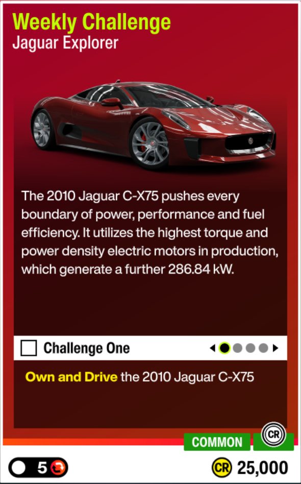

weekly5 очков
01Еженедельное испытание
Условие: На 2010 Jaguar C-X75: сядьте за руль, сфотографируйте автомобиль в Shirakawa-go, завершите 2 Road Races и припаркуйтесь на любом Car Meet. Награда: 25 000 CR.
Как выполнить: Главы засчитываются только по порядку. Для двух Road Races удобно запустить короткую пользовательскую гонку на Shimanoyama Circuit с одним кругом и пройти её дважды.
Автомобиль и тюнинг: 2010 Jaguar C-X75 · 110 140 996.
Решение: сообщество
Официальная Playlist · Winter-гайд сообщества: главы и тюнинг